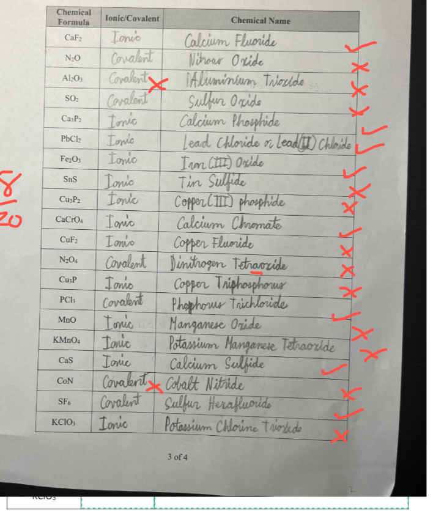
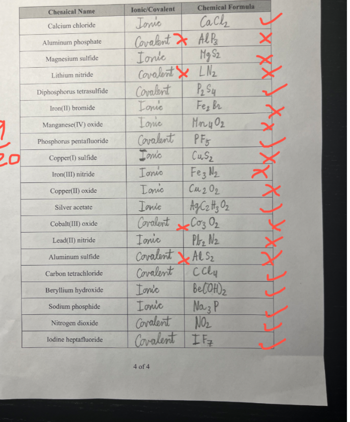

Chapter 1: Chemistry Foundations
Atomic structure | Bohr and Lewis diagrams | Ions and isotopes | Ionic/covalent compounds | Nomenclature | Corrected homework fixes
1. Core Concepts
Physical vs. Chemical
Physical property: observed without changing the substance, such as colour, density, solubility, or melting point.
Chemical property: observed when a new substance forms, such as flammability, corrosion, or rusting.
Evidence of chemical change can include new colour, precipitate, heat/light, bubbles/gas, or a change that is difficult to reverse.
Atomic Structure
| Particle | Charge | Location |
|---|---|---|
| Proton | +1 | Nucleus |
| Neutron | 0 | Nucleus |
| Electron | -1 | Outside nucleus |
mass number = protons + neutrons
atomic number = protons
Terms That Were Easy to Mix Up
| Term | Meaning | Trap |
|---|---|---|
| Isotope | Same element, different number of neutrons. | Mass changes; charge does not have to change. |
| Ion | Atom or group with different number of electrons. | Atoms become ions by gaining/losing electrons, not protons. |
| Cation | Positive ion. | Usually formed by losing electrons. |
| Anion | Negative ion. | Usually formed by gaining electrons. |
2. Bohr and Lewis Diagrams
Bohr-Rutherford
- Find protons from atomic number.
- Find neutrons from mass number - protons.
- Find electrons from charge.
- Fill shells: 2, 8, 8, 18.
Lewis Dot Diagrams
Dots represent valence electrons. Place single dots around the symbol before pairing them.
For ions, show the final valence shell after electrons are lost or gained.
3. Naming and Writing Formulas
| Compound type | How to recognize | How to name/write |
|---|---|---|
| Ionic | metal + nonmetal, or contains a polyatomic ion | Use charges and crisscross. Name metal first, then nonmetal ending in -ide or polyatomic name. |
| Multivalent ionic | transition metal with more than one charge | Use Roman numerals, such as iron(III) oxide. |
| Polyatomic ionic | contains ions like NO₃⁻, PO₄³⁻, OH⁻ | Keep the polyatomic ion together and use brackets if more than one is needed. |
| Covalent | nonmetal + nonmetal | Use prefixes: mono, di, tri, tetra, penta, hexa, hepta, octa, nona, deca. Do not simplify molecular formulas. |
Practice Test 1: Easy-to-Miss Questions
Try these first without looking at the answers.
- For chlorine-35, find protons, neutrons, and electrons in a neutral atom.
- For Mg²⁺, how many electrons does it have?
- What is the difference between an isotope and an ion?
- Draw or describe the Lewis dot diagram for bromine.
- Should Li⁺ have a Lewis dot? Explain.
- Classify as ionic or covalent: Al₂O₃, SO₂, CaF₂, N₂O.
- Why is hydrogen peroxide written H₂O₂, not HO?
- Name SnCl₄.
- Write the formula for calcium chloride.
- Write the formula for lithium nitride.
Answers and analysis: Test 1
- 17 protons, 18 neutrons, 17 electrons.
Atomic number of chlorine is 17; 35 - 17 = 18. - 10 electrons.
Neutral Mg has 12 electrons; Mg²⁺ has lost 2. - Isotopes differ in neutrons; ions differ in electrons and charge.
- Bromine has 7 valence electrons.
- No valence dot.
Li⁺ lost its only valence electron. - Al₂O₃ ionic; SO₂ covalent; CaF₂ ionic; N₂O covalent.
- It is a molecular compound; the formula shows the actual number of atoms in the molecule and is not simplified like an ionic ratio.
- Tin(IV) chloride.
- CaCl₂.
- Li₃N.
Practice Test 2: More Tricky Mixed Questions
- An unknown element X forms XCl₂. Predict its formula with oxygen.
- Name Fe₂O₃, Cu₃P, and KMnO₄.
- Name N₂O₄, PCl₃, and SF₆.
- Write formulas for aluminum phosphate, magnesium sulfide, and iron(II) bromide.
- Write formulas for cobalt(III) oxide, lead(II) nitride, and beryllium hydroxide.
- Explain why Al₂O₃ is ionic, not covalent.
- Explain why SO₂ is sulfur dioxide, not sulfur oxide.
- What is wrong with naming CuF₂ as copper fluoride?
- What is wrong with writing magnesium sulfide as MgS₂?
- What is wrong with writing copper(II) oxide as Cu₂O₂?
Answers and analysis: Test 2
- XO.
XCl₂ suggests X is 2+; oxygen is 2-, so the ratio is 1:1. - Iron(III) oxide; copper(I) phosphide; potassium permanganate.
- Dinitrogen tetroxide; phosphorus trichloride; sulfur hexafluoride.
- AlPO₄; MgS; FeBr₂.
- Co₂O₃; Pb₃N₂; Be(OH)₂.
- Aluminum is a metal and oxygen is a nonmetal, so it is ionic.
- SO₂ is covalent, so prefixes are needed; two oxygens means dioxide.
- Copper is multivalent; CuF₂ contains Cu²⁺, so it is copper(II) fluoride.
- Mg²⁺ and S²⁻ simplify to a 1:1 ratio, so the formula is MgS.
- Ionic formulas must be simplified; Cu²⁺ and O²⁻ make CuO.
Corrected Homework Fixes
The corrected homework shows the biggest lost marks on Q9 and Q10: naming formulas and writing formulas. These are the repairs to study first.
What Went Wrong Most Often
- Classifying metal + nonmetal compounds as covalent.
- Using prefixes on ionic compounds, such as writing aluminum trioxide.
- Forgetting Roman numerals for multivalent metals.
- Forgetting polyatomic ion names, especially chromate, permanganate, chlorate, acetate, and hydroxide.
- Not simplifying ionic formulas, such as Cu₂O₂ instead of CuO.
Mini Repair Method
- Ask: metal present? If yes, usually ionic.
- If ionic, use charges and crisscross, then simplify.
- If the metal is multivalent, calculate charge and add Roman numeral.
- If covalent, use prefixes and do not simplify the formula.
Error Pattern → What to Study → Next Check
| Error pattern from the marked homework | What knowledge to review | How to check next time |
|---|---|---|
| Marked Al₂O₃, CoN, or aluminum phosphate as covalent. | Ionic vs. covalent classification: metal + nonmetal is ionic; nonmetal + nonmetal is covalent. | Circle the first element. If it is a metal, use ionic charge rules instead of prefixes. |
| Used names like aluminum trioxide or potassium chlorine trioxide. | Ionic naming: ionic compounds do not use mono/di/tri prefixes. Polyatomic ions keep their special names. | Ask: is this ionic? If yes, remove prefixes and check for a polyatomic ion name. |
| Wrote copper fluoride, manganese oxide, tin sulfide, or cobalt nitride without Roman numerals. | Multivalent metals: transition metals often need Roman numerals to show charge. | Use the anion charge to calculate the metal charge, then write copper(I), copper(II), iron(III), etc. |
| Wrote formulas like MgS₂, Fe₂Br₂, Cu₂O₂, or AlP₃. | Crisscross and simplify: ionic formulas are lowest whole-number ratios. | After crisscrossing, divide subscripts by any common factor. If both charges are the same size, the formula is 1:1. |
| Confused chromate, permanganate, chlorate, acetate, and hydroxide. | Polyatomic ions: memorize formula, charge, and name as one unit. | Put brackets around the ion mentally: (CrO₄)²⁻, (MnO₄)⁻, (ClO₃)⁻, (OH)⁻. |
| Tried to simplify covalent formulas or missed covalent prefixes. | Covalent naming and formulas: prefixes give actual atom counts and are not simplified. | For nonmetal + nonmetal, translate prefixes directly: di = 2, tetra = 4, hepta = 7. |
Recommended Homework Pre-Check
After finishing homework, take clear photos of each page and upload them to an AI tool for a pre-check before submitting.
- Ask it to check only for likely errors, not to rewrite the whole assignment.
- Use a prompt like: Check my chemistry homework for mistakes. For each possible error, tell me the question number, what rule I should review, and give a hint before the final answer.
- Pay special attention to classification, Roman numerals, polyatomic ions, and simplified ionic formulas.
- Do the correction yourself after reading the feedback, so the submitted work still reflects your own understanding.
Teacher-Marked Tables


Q9 Corrected Answers: Formula to Name
| Formula | Type | Correct name | Fix |
|---|---|---|---|
| CaF₂ | Ionic | calcium fluoride | No prefixes for ionic compounds. |
| N₂O | Covalent | dinitrogen monoxide | Use prefixes; common name nitrous oxide may not match the worksheet style. |
| Al₂O₃ | Ionic | aluminum oxide | Metal + nonmetal. |
| SO₂ | Covalent | sulfur dioxide | Two oxygens = dioxide. |
| Ca₃P₂ | Ionic | calcium phosphide | Phosphorus becomes phosphide. |
| PbCl₂ | Ionic | lead(II) chloride | Lead is multivalent. |
| Fe₂O₃ | Ionic | iron(III) oxide | O is 2-, so Fe must be 3+. |
| SnS | Ionic | tin(II) sulfide | S is 2-, so Sn is 2+. |
| Cu₃P₂ | Ionic | copper(II) phosphide | P is 3-, so Cu is 2+. |
| CaCrO₄ | Ionic | calcium chromate | CrO₄²⁻ is chromate. |
| CuF₂ | Ionic | copper(II) fluoride | F is 1-, so Cu is 2+. |
| N₂O₄ | Covalent | dinitrogen tetroxide | Drop the a in tetraoxide. |
| Cu₃P | Ionic | copper(I) phosphide | P is 3-, so each Cu is 1+. |
| PCl₃ | Covalent | phosphorus trichloride | Covalent prefixes. |
| MnO | Ionic | manganese(II) oxide | O is 2-, so Mn is 2+. |
| KMnO₄ | Ionic | potassium permanganate | MnO₄⁻ is permanganate. |
| CaS | Ionic | calcium sulfide | S becomes sulfide. |
| CoN | Ionic | cobalt(III) nitride | N is 3-, so Co is 3+. |
| SF₆ | Covalent | sulfur hexafluoride | Six fluorines = hexafluoride. |
| KClO₃ | Ionic | potassium chlorate | ClO₃⁻ is chlorate. |
Q10 Corrected Answers: Name to Formula
| Name | Type | Correct formula | Fix |
|---|---|---|---|
| Calcium chloride | Ionic | CaCl₂ | Ca²⁺ and Cl⁻. |
| Aluminum phosphate | Ionic | AlPO₄ | Al³⁺ and PO₄³⁻ simplify to 1:1. |
| Magnesium sulfide | Ionic | MgS | Mg²⁺ and S²⁻ simplify to 1:1. |
| Lithium nitride | Ionic | Li₃N | Li⁺ and N³⁻. |
| Diphosphorus tetrasulfide | Covalent | P₂S₄ | Covalent formulas do not simplify. |
| Iron(II) bromide | Ionic | FeBr₂ | Fe²⁺ and Br⁻. |
| Manganese(IV) oxide | Ionic | MnO₂ | Mn⁴⁺ and O²⁻ simplify. |
| Phosphorus pentafluoride | Covalent | PF₅ | Penta = 5. |
| Copper(I) sulfide | Ionic | Cu₂S | Cu⁺ and S²⁻. |
| Iron(III) nitride | Ionic | FeN | Fe³⁺ and N³⁻ simplify to 1:1. |
| Copper(II) oxide | Ionic | CuO | Cu²⁺ and O²⁻ simplify to 1:1. |
| Silver acetate | Ionic | AgC₂H₃O₂ | Acetate is C₂H₃O₂⁻. |
| Cobalt(III) oxide | Ionic | Co₂O₃ | Co³⁺ and O²⁻. |
| Lead(II) nitride | Ionic | Pb₃N₂ | Pb²⁺ and N³⁻. |
| Aluminum sulfide | Ionic | Al₂S₃ | Al³⁺ and S²⁻. |
| Carbon tetrachloride | Covalent | CCl₄ | Tetra = 4. |
| Beryllium hydroxide | Ionic | Be(OH)₂ | Use brackets for two hydroxides. |
| Sodium phosphide | Ionic | Na₃P | Na⁺ and P³⁻. |
| Nitrogen dioxide | Covalent | NO₂ | Di = 2. |
| Iodine heptafluoride | Covalent | IF₇ | Hepta = 7. |